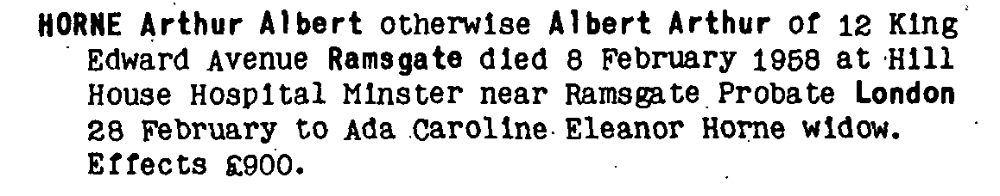
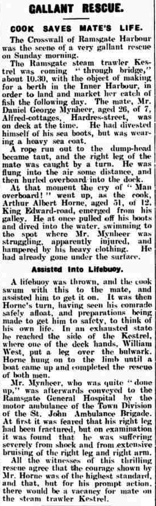
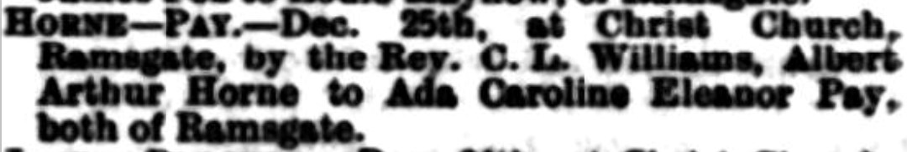
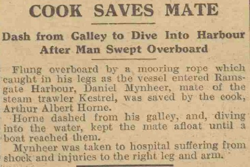
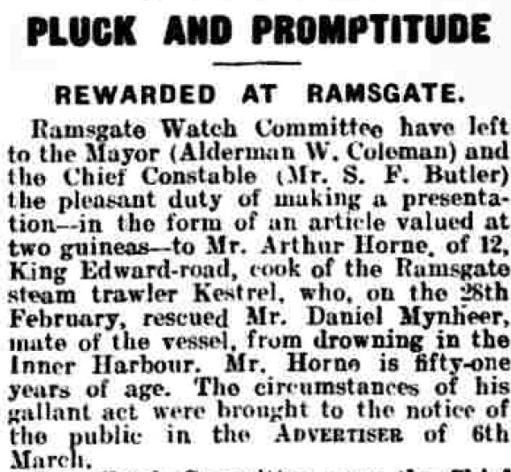
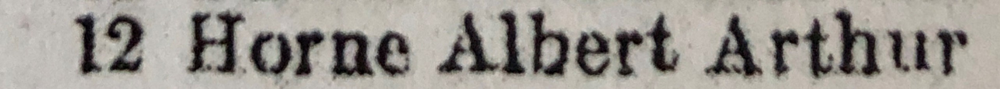

Arthur Albert Horne 1875 - 1958
[ Home ] | [ Calendar ] | [ Surnames Index ] | [ Census Index ] | [ Family History ]A smack owners's assistant and fisherman and the child of James Horn (a brewer's laborer) and Harriet Fox, Arthur Horne, the first cousin three-times-removed on the father's side of Nigel Horne, was born in Ramsgate, Kent, England on Feb 12, 18751,2,3,4, was baptized in St Lawrence, Thanet, Kent, England on Mar 4, 1875 and married Ada Pay (with whom he had 8 children: Arthur Herbert, May Winifred, Phyllis, John Albert, Rose I, Doris, Lillian Violet and Lorna, along with 1 surviving child) at Christ Church in Ramsgate on Dec 25, 19077.
During his life, he was living at Addington Street in Ramsgate on Mar 31, 190110; at 30 Royal Road in Ramsgate on Apr 2, 1911; and at 12 King Edward Road in Ramsgate on Jun 19, 19211, in 19239, on Mar 6, 1926, on Sep 29, 19392, in 19558 and in 1958. He served in the military from 1914 to 1918 (rank: Deck Hand; Service number: DA 16075) He served in the military from 1914 to 1918 (rank: Deck Hand; Service number: DA 16075)In 1921 he was working at George Casley Snack Owner in Sea.
He died on Feb 8, 1958 on Hill House Hospital, Tothill Street, Minster, Thanet, Kent, England5,6.
Parents
- James was born in 1833
- Harriet Allen was born on May 13, 1839
Children
- Arthur Herbert was born on Jul 25, 1909
- May Winifred was born on Aug 17, 1911
- Phyllis was born on Aug 17, 1913
- John Albert was born on Sep 21, 1915
- Doris was born c. May 1919
- Lillian Violet was born on May 5, 1922
- Lorna was born c. May 1927
Citations
- 1921 Census Of England & Wales - Findmypast (was age 47 and the head of the household)
- 1939 Register - Findmypast (was the head of the household)
- England & Wales births 1837-2006 - Findmypast
- Lives Of The First World War 1914-1918 - Findmypast
- England & Wales Government Probate Death Index 1858-2019 - Findmypast
- England & Wales deaths 1837-2007 - Findmypast
- England & Wales marriages 1837-2008 - Findmypast
- 1955 Kelly's Thanet Directory
- 1923 Kelly's Thanet Directory
- 1901 England, Wales & Scotland Census - Findmypast (was age 27 and the son of the head of the household)
Notes
From Daily Mirror, 2 Mar 1926: "COOK SAVES MATE Dash from Galley to Dive Into Harbour After Man Swept Overboard Flung overboard by a mooring rope which caught in his legs as the vessel entered Ramsgate Harbour, Daniel Mynheer, mate of the steam trawler Kestrel, was saved by the cook, Arthur Albert Horne.
Horne dashed from his galley, and, diving into the water, kept the mate afloat until a boat reached them.
Mynheer was taken to hospital suffering from shock and injuries to the right leg and arm.".
Media
Arthur Horne - probate

Thanet Advertiser 6 Mar 1926

East Kent Times and Mail - 1 Jan 1908

1955 Kelly's Thanet Directory

Daily Mirror - 2 Mar 1926

Thanet Advertiser - 1 Apr 1926

1923 Kelly's Thanet Directory

1901 England, Wales & Scotland Census - GBC/1901/0007443410
England & Wales births 1837-2006 - BMD/B/1875/1/AZ/000272/134
England & Wales deaths 1837-2007 - BMD/D/1958/1/AZ/000606/042
England & Wales marriages 1837-2008 - BMD/M/1907/4/AZ/000194/156
1939 Register Transcription - TNA-R39-1767-1767C-005-15
Kent Baptisms - GBPRS/CANT/B/96405000
England Births & Baptisms 1538-1975 - R_885343964
England & Wales Government Probate Death Index 1858-2019 - GBOR/GOVPROBATE/C/1958-1958/00108097
1921 Census of England & Wales - GBC/1921/RG15/04480/0263/01
Family Tree

Generated by ged2site. Last updated on Jun 11, 2024